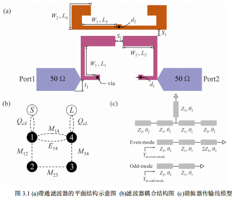
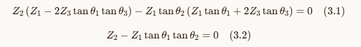
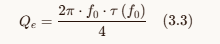
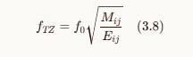
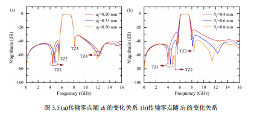
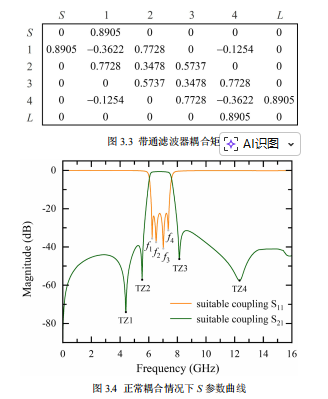
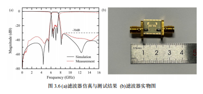
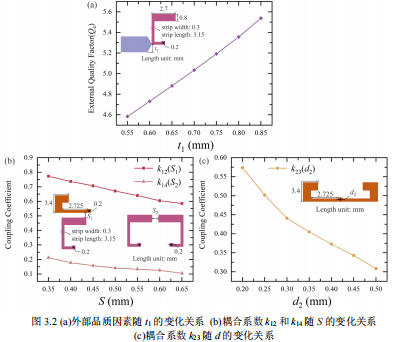

面向6G的宽带带通滤波器设计
文章分析报告
混合电磁交叉耦合 · 折叠阶跃阻抗谐振器 · 6-8GHz ADS 仿真参考
来源：微信公众号文章《面向6G的宽带带通滤波器设计：混合电磁交叉耦合技术的应用》
作者：微波 | 发布时间：2026-04-03 15:04 | 分析日期：2026-07-30
作者：微波 | 发布时间：2026-04-03 15:04 | 分析日期：2026-07-30
| 设计对象 | 文章中的作用 | 调参含义 | 工程关注点 |
|---|---|---|---|
| 馈线间距 t1 | 控制外部品质因素 Qe，影响端口耦合强度。 | 间距增大，Qe 增大，外部耦合减弱。 | 匹配 |
| 谐振器间距 / 孔径 | 调节磁耦合 Mij 与电耦合 Eij 的比例。 | 改变传输零点位置和带外陡峭度。 | 选择性 |
| 双模 SIR 参数 | 分别约束偶模、奇模谐振点。 | 决定通带内部极点分布和带宽。 | 带宽 |
| 折叠布局 | 降低面积，同时引入邻近耦合可能性。 | 必须通过 EM 仿真校正寄生耦合。 | EM 依赖 |
| 指标 | 文章给出的结果 | 分析判断 | 复用等级 |
|---|---|---|---|
| 基板 | Rogers 4003C，Er=3.55，h=0.813mm，tanδ=0.0027 | 适合 6GHz 以上低损耗设计；与 FR4 L3 方案差异显著。 | 需重算 |
| 中心频率 | 6.8GHz | 接近当前 6-8GHz 目标中心，但文章带宽不一定完整覆盖 8GHz 边缘。 | 可参考 |
| 相对带宽 | 22.8% | 按 6.8GHz 估算绝对带宽约 1.55GHz；当前 6-8GHz 目标约 28.6% FBW，更激进。 | 需扩带 |
| 插入损耗 | 1.39dB | 指标优秀，但高度依赖低损耗基材、铜厚、表面粗糙度和加工精度。 | 目标值 |
| 带外抑制 | 2.35f0 处约 -30dB | 说明传输零点布局有效；当前 5GHz 抑制目标若为 -45dB，仍需额外优化。 | 可借鉴 |
| 尺寸 | 7.45mm × 5.725mm | 非常紧凑，适合作为小型化 benchmark；但高密度耦合导致 EM 参数敏感。 | 有价值 |
| 当前候选方向 | 文章方案关系 | 建议动作 | 优先级 |
|---|---|---|---|
| 九阶交指滤波器 | 同属耦合谐振器路线，但阶数和零点机制不同。 | 可用文章的“外部 Qe + 耦合矩阵 + TZ”思路解释当前 tap / S1-S8 扫描。 | 中 |
| FR4 短路 stub BPF | 成本低，但文章依赖低损耗 Rogers，直接迁移风险较高。 | FR4 路线可借鉴零点设计，但不建议直接复制该微带高 Q 结构。 | 中低 |
| High/Low SIR BPF | 与文章核心最接近，均通过阻抗阶跃和谐振器耦合实现带通。 | 优先扩展为“双模 SIR + 交叉耦合”的新参数化生成器。 | 高 |
| RFPro/FEM 自动闭环 | 完全适合验证此类强 EM 依赖结构。 | 保持 CSV -> DXF -> ADS -> FEM -> score 流程，新增结构生成器即可。 | 高 |
| 字段组 | 建议字段 | 用途 |
|---|---|---|
| 材料与频率 | substrate, er, h_mm, copper_mm, f0_ghz, fbw_pct | 控制缩放和损耗模型。 |
| SIR 几何 | w1_mm, w2_mm, w3_mm, theta1_deg, theta2_deg, theta3_deg, fold_gap_mm | 约束单模 / 双模谐振点。 |
| 耦合控制 | feed_gap_mm, main_gap_mm, cross_gap_mm, electric_slot_mm, magnetic_window_mm | 控制 Qe、主耦合、交叉耦合和混合电磁比例。 |
| 工艺检查 | min_fab_feature_mm, boundary_margin_mm, metal_layer, via_layer | 保持与现有 DXF 导入和 DRC 输出兼容。 |

| 版图对象 | 细致分析 | 影响 |
|---|---|---|
| Port1 / Port2 50Ω 馈线 | 左右两侧粗微带为外部馈入结构，非直接串联穿越，而是靠近下方谐振器形成端口耦合。馈线间距 t1 是外部 Qe 的主调参量。 | 匹配/插损 |
| 下方紫色 U 形谐振器 | 中心下方大 U 形线段承担双模谐振器角色，左右下端靠近馈线，顶部横段与上方橙色结构存在强近场耦合。 | 通带极点 |
| via 接地点 | U 形谐振器左右底部附近各有 via，说明该结构存在短路支节/接地加载成分。via 的等效电感会影响奇偶模频率，不能在 EM 中忽略。 | 频偏风险 |
| 上方橙色折叠线 | 上方为折叠阶跃阻抗谐振器，W2/L4 与 W1/L3 两类线宽长度共同决定等效电长度和阻抗阶跃比。 | 小型化 |
| S1 / S2 间隙 | S1 是橙色结构末端与紫色结构上方之间的垂直间隙，S2 是橙色中段和紫色竖臂之间的局部耦合间隙，分别对应不同耦合路径。 | 零点位置 |
| 参数 | 版图对应位置 | 调参机理 | 对曲线的预期影响 |
|---|---|---|---|
| t1 | 馈线与下方谐振器之间的间距 | 控制外部品质因素 Qe。文章图 3.2(a)显示 t1 增大时 Qe 增大，说明外部耦合变弱。 | t1 过小：插损低但回波变差；t1 过大：耦合不足、通带塌陷。 |
| S | 上/下谐振器之间的主要耦合间距 | 图 3.2(b)显示 S 改变 k12/k14。S 增大通常降低近场耦合，影响主通带耦合和交叉耦合平衡。 | 改变通带宽度、纹波和 TZ 位置，属于最敏感 sweep 项之一。 |
| d1 | 右下方 via / 谐振器局部加载位置 | 图 3.5(a)显示 d1 改变时 TZ3、TZ4 位置移动。它更像调混合电磁耦合的局部电长度和场分布。 | 主要移动高频侧零点，也会牵动 8GHz 边缘插损。 |
| d2 | 橙色折叠臂末端与局部耦合区域的横向距离 | 图 3.2(c)显示 d2 增大时 k23 降低。它是双模/相邻谐振器耦合强度调节项。 | d2 增大：耦合减弱，带宽收窄；d2 减小：带宽扩大但纹波和寄生耦合风险上升。 |
| W1/W2/L1-L4 | 紫色 U 形和橙色折叠段的线宽/长度 | 决定阻抗阶跃比与等效电长度。文章给出的 Z1/Z2/Z3、θ1/θ2/θ3 本质上要通过这些几何尺寸实现。 | 影响中心频率、偶/奇模分裂、寄生通带位置。 |

| 变量 | 工程解释 | 版图落点 |
|---|---|---|
| Z1/Z2/Z3 | 不同线宽微带段的特性阻抗，文章给出 111.6Ω / 76.8Ω / 101.5Ω。 | W1/W2/W3 线宽 |
| θ1/θ2/θ3 | 各段在目标频点的电长度，文章给出 34.9° / 44.9° / 1.3°。 | L1/L2/L3 或折叠段 |
| 偶模 6.37GHz | 低侧极点，决定 6GHz 附近边缘支撑。 | 双模谐振器整体加载 |
| 奇模 7.3GHz | 高侧极点，决定 8GHz 附近边缘支撑。 | 双模谐振器线宽/长度 |

| 现象 | 解释 | 对 ADS sweep 的启发 |
|---|---|---|
| t1 增大，Qe 增大 | 馈线与谐振器距离变远，端口注入能量变少。 | feed_gap_mm 需要单变量扫。 |
| Qe 过小 | 过耦合，通带可能更宽但回波恶化，插损和纹波不稳定。 | 评分需加入 worst S11/S22。 |
| Qe 过大 | 欠耦合，带内能量进不去，通带边缘下陷。 | 关注 S21@6G / S21@8G。 |
| 群时延法 | 从单谐振器仿真提取 Qe，比直接全结构扫更可解释。 | 可新增 prepare 单腔仿真模式。 |


| 图 3.5 观察 | 技术解释 | 工程判断 |
|---|---|---|
| d1 改变 | TZ3/TZ4 明显移动，说明 d1 对混合电磁耦合比值敏感。 | d1 应作为高频零点控制旋钮，不宜和长度 L 同时大步扫。 |
| S2 改变 | TZ1/TZ2/TZ3 的相对位置和深度变化，说明 S2 同时影响多个耦合路径。 | S2 是多目标变量，需小步长 sweep 并记录零点位置。 |
| 零点深度变化 | 某些曲线零点变浅，代表电/磁抵消条件偏离。 | 评分不能只看频点衰减，还要看零点是否稳定。 |
| 上阻带抑制 | 高频侧 TZ 位置影响 9-16GHz 抑制包络。 | 当前 4-10GHz 仿真可能不够，应扩到 16GHz 做杂散检查。 |


| 观察点 | 细节解读 | 对复现的要求 |
|---|---|---|
| 矩阵 S-1 / 4-L 为 0.8905 | 源到 1、4 到负载的外部耦合对称，说明版图左右镜像是为了保证输入输出匹配一致。 | 生成器必须保持左右端口和谐振器对称，除非刻意做补偿。 |
| M12/M34 = 0.7728 | 主耦合强，支撑宽带通带；若该值不足，6/8GHz 边缘会下陷。 | 主间隙 S/d2 要优先校准。 |
| M14 = -0.1254 | 负号代表交叉耦合极性相反，是产生有限频率传输零点的关键。 | 版图交叉路径不能简化掉。 |
| 仿真/实测曲线差异 | 实测曲线零点不如仿真深，带外包络也有偏差，常见来源是 SMA 焊接、铜粗糙度、介电常数偏差和 via 寄生。 | ADS 模型需加入端口过渡余量，并做材料参数敏感性。 |
